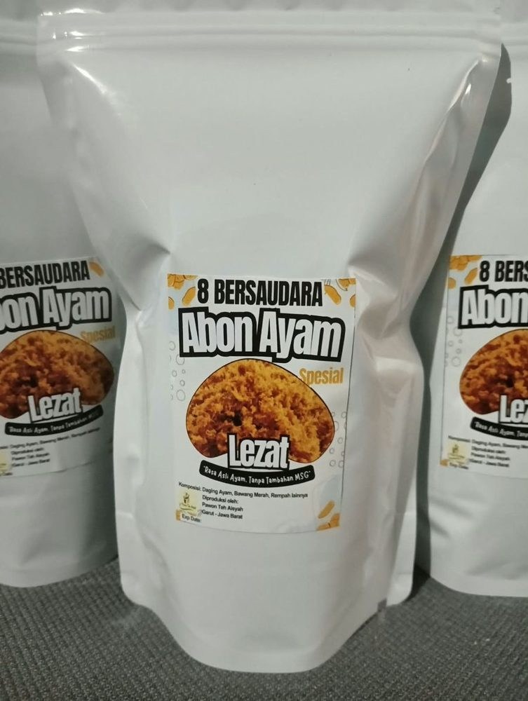
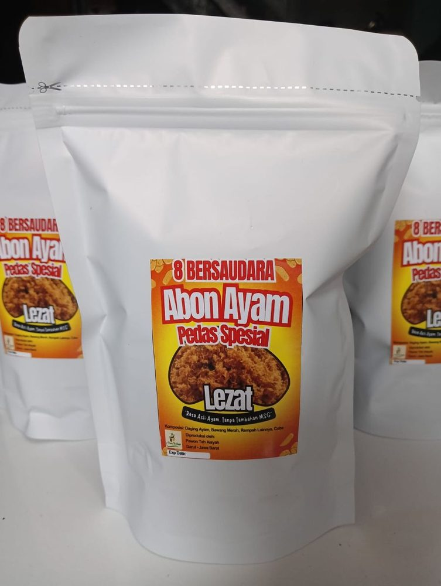
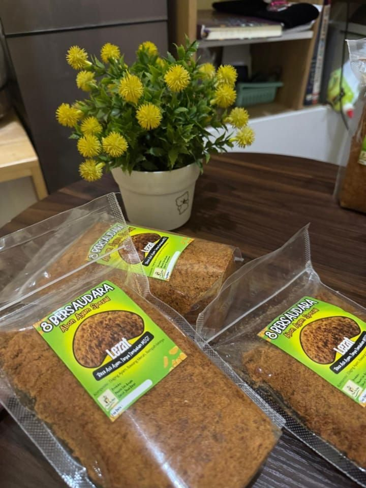

Abon ayam dari Garut
Rasa asli ayam, tanpa tambahan MSG.
Dibuat dari daging ayam, bawang merah, dan rempah pilihan. Tersedia rasa original dan pedas. Pesan lewat WhatsApp, bayar dengan transfer.


- BahanAyam, bawang merah, rempah
- RasaOriginal dan pedas
- MSGTanpa tambahan MSG
- AsalTarogong Kaler, Garut
Pilih produk
Tiga pilihan, satu cara pesan
Tekan tombol di bawah produk yang kamu mau. WhatsApp terbuka dengan pesan yang sudah tersusun.
Paket hemat
Paket oleh-oleh Garut
Bingung pilih? Ambil paket yang sudah dipasangkan, cocok untuk hantaran atau dibawa pulang.

Mengenal produk kami
Rasa yang gurih, bahan yang jelas
- Gurih khas ayam Dibuat dari daging ayam, jadi rasa gurihnya terasa asli dan cocok dimakan kapan saja.
- Bahan yang jelas Daging ayam, bawang merah, dan rempah pilihan. Varian pedas ditambah cabai.
- Cocok untuk banyak hidangan Tinggal taburkan di atas nasi hangat, bubur, atau roti.
- Tanggal kedaluwarsa tertera Setiap kemasan mencantumkan tanggal kedaluwarsa, jadi mudah dicek sebelum dimakan.
Tentang kami
Dari Pawon Teh Aisyah, Garut
Camilan 8 Bersaudara dibuat di dapur rumahan di Tarogong Kaler, Garut. Kami memilih bahan yang jelas dan memasaknya dalam jumlah kecil supaya rasanya terjaga.
Setiap pesanan kami kemas sendiri, lalu kami kirim ke alamatmu.
- RumahanDibuat dalam jumlah kecil
- GarutTarogong Kaler, Jawa Barat
- Tanpa MSGUntuk varian abon ayam
Kata pembeli
Mereka sudah mencoba
Cara pesan
Tiga langkah, selesai di WhatsApp
Kirim pesan
Pilih produk, lalu tekan "Pesan via WhatsApp". Tulis jumlah, nama, dan alamatmu, lalu kirim.
Terima total
Kami balas dengan total belanja, ongkir, dan nomor rekening.
Transfer dan kirim bukti
Kirim bukti transfer lewat chat yang sama. Pesananmu kami kemas dan kirim.
- Dikirim ke seluruh IndonesiaLewat ekspedisi, ongkir sesuai alamat
- Kemasan amanDikemas rapi sebelum dikirim
- Tanggal kedaluwarsa terteraMudah dicek di tiap kemasan
- Bayar transferTanpa akun, semua lewat chat
Pertanyaan umum
Yang sering ditanyakan
Cari jawabannya di sini. Belum ketemu? Tanya langsung lewat WhatsApp.
Bagaimana cara memesan?
Pilih produk di atas, lalu tekan "Pesan via WhatsApp". Pesan sudah tersusun otomatis, kamu tinggal isi jumlah, nama, dan alamat, lalu kirim. Kami balas dengan total belanja, ongkir, dan nomor rekening.
Apakah harus daftar akun?
Tidak perlu. Semua proses pemesanan lewat WhatsApp, tanpa daftar dan tanpa isi formulir panjang.
Boleh bertanya dulu sebelum memesan?
Boleh banget. Tekan tombol WhatsApp, tulis pertanyaanmu, dan kami jawab lewat chat.
Apakah bisa pesan dalam jumlah banyak atau untuk reseller?
Bisa. Tulis jumlah yang kamu butuhkan lewat WhatsApp dan kami sampaikan harga serta ketersediaannya.
Bagaimana cara membayar?
Bayar dengan transfer ke nomor rekening yang kami kirim lewat chat. Setelah transfer, kirim bukti pembayaran di chat yang sama, lalu pesananmu kami kemas dan kirim.
Produk apa saja yang tersedia?
Abon ayam (original dan pedas), keripik pisang (cokelat lumer, cokelat tabur, cheesemilk), pastel abon, cipeng (pedas dan original), serta kentang mustofa. Harga tiap produk tertera di kartunya.
Apa bedanya abon ayam original dan pedas?
Keduanya dibuat dari daging ayam, bawang merah, dan rempah pilihan. Varian pedas ditambah cabai, jadi cocok untuk kamu yang suka sensasi pedas.
Bagaimana cara mengecek tanggal kedaluwarsa?
Setiap kemasan mencantumkan tanggal kedaluwarsa, jadi mudah dicek sebelum dimakan.
Bagaimana cara menyimpan produknya?
Simpan di tempat kering dan sejuk, dan tutup rapat kemasan setelah dibuka. Untuk batas konsumsi, lihat tanggal kedaluwarsa di kemasan.
Berapa ongkos kirimnya?
Ongkir menyesuaikan alamat tujuanmu. Tulis alamat lengkap saat memesan, nanti kami sampaikan totalnya, termasuk ongkir, lewat chat.
Dikirim lewat ekspedisi apa dan berapa lama sampai?
Tanyakan lewat WhatsApp dengan menyebut kota tujuanmu. Kami infokan pilihan ekspedisi dan perkiraan lama pengiriman.
Tidak ada pertanyaan yang cocok dengan pencarianmu.
Tanya lewat WhatsApp